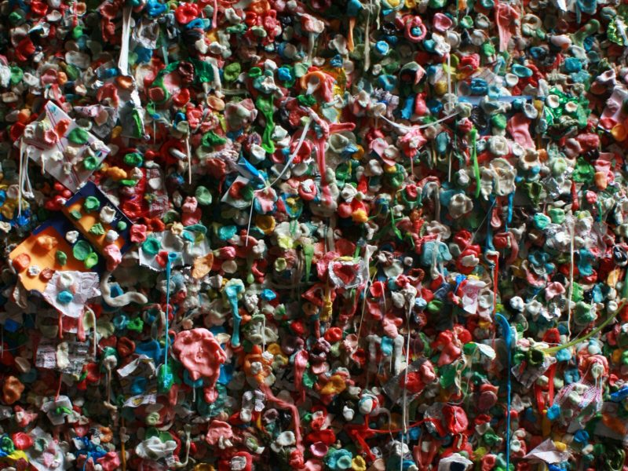

April 17, 2019
Chew on this!

Historians believe humans have enjoyed chewing gum for 9,000 years. Mayans, Greeks, Scandinavians and Native Americans all knew the pleasure of distilling tree sap into this yummy concoction.
But now, conventional gum base is synthetic, made from polyethylene and/or polyvinyl acetate. That’s right. We are chewing on plastic – 3.74 trillion sticks of it every year! It is yet another way that we consume petroleum products.
And as the second most common form of litter (after cigarette butts), it also creates an expensive public nuisance. To clean up sidewalks or wall “art” (photo courtesy of Callie Broaddus), cities and local businesses spend millions, use nasty solvents and lots of electricity and water.
How do we burst this plastic bubble?
1 – Buy all natural varieties like Simply Gum, Chicza or Glee Gum.
2 – Recycle. TerraCycle and Gumdrop are two companies that will collect your “already been chewed” gum to turn into frisbees, Wellington boots or other new plastic products.
3 – Make your own!
Homemade Chewing Gum Recipe:
- 1 cup of food grade beeswax or all-natural chicle (available online through www.natural-chicle.net)
- 3 teaspoons of honey
- Fruit juice or other flavoring extract like cinnamon or mint
- Waxed paper
Instructions – Melt the cup of beeswax in a double boiler, but make sure it does not become too liquefied. When beeswax becomes like goo, start adding honey and stir. Repeat the same procedure with room temperature fruit juice. The mixture will quickly start to thicken out. After the dough is cooled, it can be molded into any chewing gum shape is desired (squares, rods, orbs, etc.) and wrapped in waxed paper.